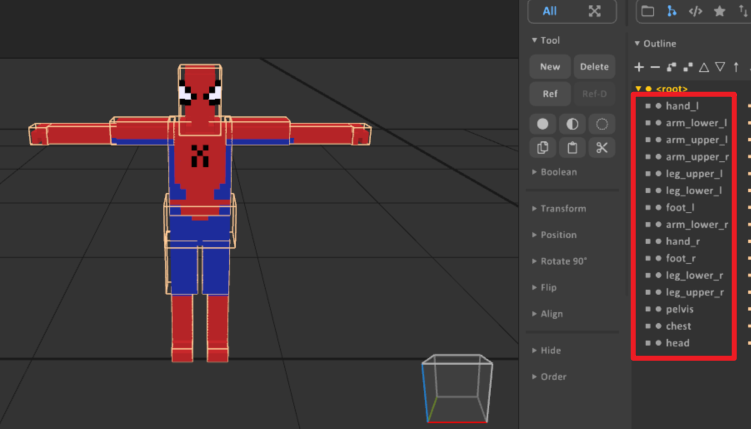
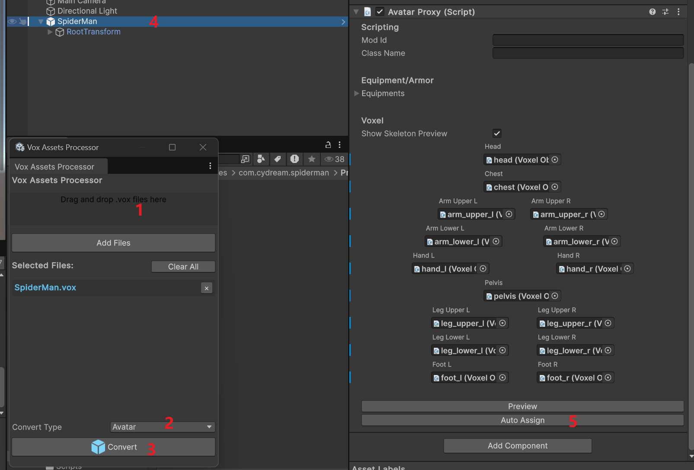
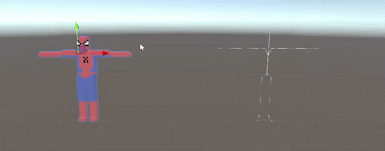

This tutorial covers the current SpiderMan avatar sample in Assets/Samples/com.cydream.spiderman. The active implementation is written in TypeScript and drives the assembled player character through JsComponentProxy, ModAPI, and the runtime EntityCharacter object.
Before importing the .vox file, separate the character into individual limbs and give every part a clear name. The character importer uses those child voxel objects to build the generated character prefab and map them to the skeleton.
Use names that match the body parts you want to assign later, such as:
headchestpelvisarm_upper_larm_lower_lhand_larm_upper_rarm_lower_rhand_rleg_upper_lleg_lower_lfoot_lleg_upper_rleg_lower_rfoot_r
.vox file into a character prefabOpen Vox Assets Processor and follow the import flow:
.vox file into the processor.After conversion, select the generated GameObject and configure Avatar Proxy:

After the voxel parts are assigned, use the scene view to line them up with the generated skeleton before you continue with gameplay logic.
This alignment pass is important because the SpiderMan script assumes the runtime avatar is already assembled on a cleanly matched skeleton.

When setting up the avatar prefab with AvatarProxy and the required avatar content, note that you do not add EntityCharacter directly to the prefab in the authoring step.
At runtime, the game instantiates another character prefab and assembles the content referenced by AvatarProxy into the actual player character. That assembled runtime object exposes EntityCharacter, which is why the TypeScript script can resolve and use it.
Because the authored objects under the mod's AvatarProxy are not automatically attached to the runtime character's body parts, you must move them manually in your TypeScript script's onStart lifecycle method. Use ModAPI.GetCharacterBody to locate the target body part and re-parent your custom objects.
For example, to attach an authored particle system to the character's hip:
private onStart(): void {
if (this.smokeParticles) {
// Get the runtime character's Hip body part
const hip = ModAPI.GetCharacterBody(ModAPI.ControlledCharacter, "Hip");
if (hip) {
// Re-parent and reset transform
this.smokeParticles.transform.SetParent(hip.transform);
this.smokeParticles.transform.localPosition = Vec3.zero;
this.smokeParticles.transform.localRotation = Quat.identity;
this.smokeParticles.transform.localScale = Vec3.one;
}
}
}
To enable the grappling behavior:
Spiderman from Scripts/index.ts.AvatarProxy in the avatar prefab.Spiderman.AvatarProxy on the prefab as the avatar authoring component.JsProperties entries for any optional sound hooks:
moveJetSoundreelRopeSoundhookShotSoundThe script resolves EntityCharacter from the assembled runtime player object and then manages the rest of the feature from TypeScript.
The sample creates two grappling states, one per hand, and updates them every frame:
ModAPI.Input.LineRenderer objects.onFixedUpdate.That means you do not need to author extra MonoBehaviours for rope rendering or joint management. The TypeScript class owns all of it.
The script works best when:
AvatarProxy into a runtime player character.If a VR controller transform is not available, the sample falls back to the main camera direction for some calculations, but the intended experience is controller-driven.
The top-level structure is:
export class Spiderman {
private bindTo: VX.Mod.JsComponentProxy;
private character: VX.Entity.EntityCharacter | null;
constructor(bindTo: VX.Mod.JsComponentProxy) {
this.bindTo = bindTo;
this.character = bindTo.GetComponent(
puerts.$typeof(VX.Entity.EntityCharacter)
) as VX.Entity.EntityCharacter | null;
this.bindTo.onUpdate = (dt) => this.onUpdate(dt);
this.bindTo.onFixedUpdate = (dt) => this.onFixedUpdate(dt);
}
}
In authoring, you configure the avatar through AvatarProxy. In runtime, the script interacts with the assembled EntityCharacter. That is the current pattern for advanced avatar logic in the toolkit.
Add the avatar prefab to manifest.asset, then validate the mod:
npm run lint:mod -- com.cydream.spiderman
Testing checklist: